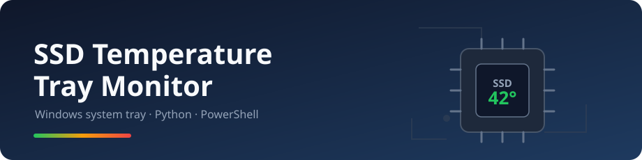
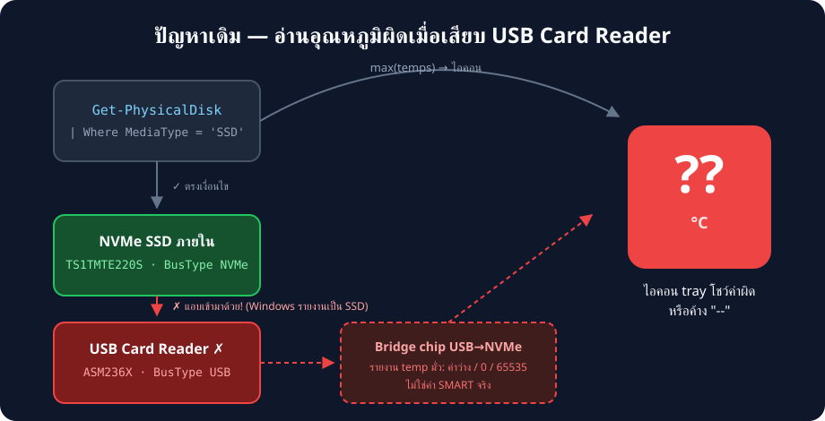
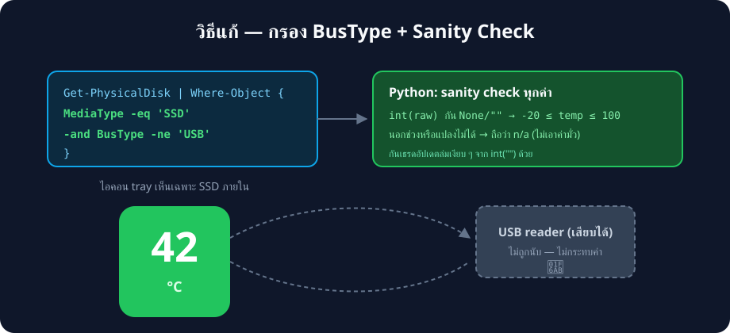

เอกสารวิเคราะห์สาเหตุและวิธีแก้ของบั๊กหลักประจำเวอร์ชัน 1.1.0
-- ทั้งที่ SSD ภายในทำงานปกติผลจาก Get-PhysicalDisk บนเครื่องที่เกิดปัญหา:
| Model | MediaType | BusType | คืออะไร |
|---|---|---|---|
| TS1TMTE220S | SSD | NVMe | SSD ภายในตัวจริง |
| ASM236X NVME ASMT | SSD | USB | Card reader / enclosure |
MediaType = 'SSD'
เพราะ bridge chip (เช่น ASMedia ASM236X) โฆษณาตัวเองกับระบบแบบนั้น —
ทั้งที่เป็นอุปกรณ์ภายนอกที่ต่อผ่าน USB
โค้ดเดิมกรองดิสก์แค่เงื่อนไขเดียว:
Get-PhysicalDisk | Where-Object MediaType -eq 'SSD'USB reader จึงหลุดเข้ามาในการคำนวณด้วย แล้วเกิดปัญหา 2 ชั้น:

Get-StorageReliabilityCounter กับดิสก์ USB มักได้ค่า
Temperature เป็นค่าว่าง, 0 หรือ 65535 —
bridge chip ส่วนใหญ่ไม่ได้ส่งต่อ SMART temperature จริง
โปรแกรมจึงเอาค่ามั่วไปแสดง หรือเอาไป max() รวมกับ SSD จริง
ทำให้ไอคอนโชว์ตัวเลขผิดทั้งที่ SSD จริงปกติ
int() กับค่าว่างทำเธรดล่มtemp = int(temp) if temp is not None else None""
(พบบ่อยกับอุปกรณ์ USB) เงื่อนไข is not None ผ่าน แล้ว
int("") ยก ValueError — exception เกิดในเธรด poll
พื้นหลัง ทำให้เธรดอัปเดตตายเงียบ ๆ ไอคอนค้างค่าเดิมตลอดไป

Get-PhysicalDisk | Where-Object {
$_.MediaType -eq 'SSD' -and $_.BusType -ne 'USB'
}try:
temp = int(raw) if raw not in (None, "") else None
except (TypeError, ValueError):
temp = None
if temp is not None and not -20 <= temp <= 100:
temp = None # ค่านอกช่วง = ขยะจาก bridge chipNone และสตริงว่างก่อนแปลง → เธรดไม่ล่ม ·
อุณหภูมิ SMART ของ SSD จริงอยู่ในช่วง -20..100 °C เสมอ
(threshold วิกฤตของ SSD ส่วนใหญ่ ~70–85 °C) — ค่านอกช่วงแสดง n/a แทน
| ทางเลือก | ทำไมไม่เลือก |
|---|---|
กรองด้วย DeviceId ตายตัว | หมายเลขดิสก์เปลี่ยนตามการเสียบ/ถอดอุปกรณ์ |
| Blacklist ชื่อรุ่น (เช่น "ASM236X") | มี bridge chip อีกหลายสิบรุ่น ไล่ตามไม่ไหว |
| อ่าน SMART ตรง ๆ ด้วย WinAPI | ต้องเขียน driver ioctl เอง ซับซ้อนเกินจำเป็น |
| Smartctl (smartmontools) | ต้องติดตั้งโปรแกรมเพิ่ม ขัดกับคอนเซ็ปต์ไฟล์เดียว |
การวัดเวลาแบบ elevated (รันต่อดิสก์) ให้ผลที่น่าตกใจ:
| ดิสก์ | เวลาที่ Get-StorageReliabilityCounter ใช้ | temp ที่ได้ |
|---|---|---|
| TS1TMTE220S [NVMe] | 0.1 s | 36 °C (ถูกต้อง) |
| ASM236X [USB] | 42.1 s (แทบค้าง) | 0 (ค่ามั่ว) |
PS_TEMPS (tray): กรอง USB เสร็จก่อนอ่าน counter → ~1 sPS_LIST (debug): รายชื่อทุกดิสก์แบบไม่อ่าน counter (~1 s เสมอ)
แล้ว merge temp ตามชื่อรุ่น — USB แสดง n/a แต่เปิดหน้าต่างได้ทันที# ดูว่าเครื่องเรามีดิสก์อะไร BusType อะไรบ้าง
Get-PhysicalDisk | Select-Object Model, MediaType, BusTypeเสียบ/ถอด USB reader แล้วรันซ้ำ จะเห็นว่าดิสก์ USB มี BusType = USB
เสมอ — ซึ่งจะถูกกรองออกโดย logic ใหม่ใน read_temps()